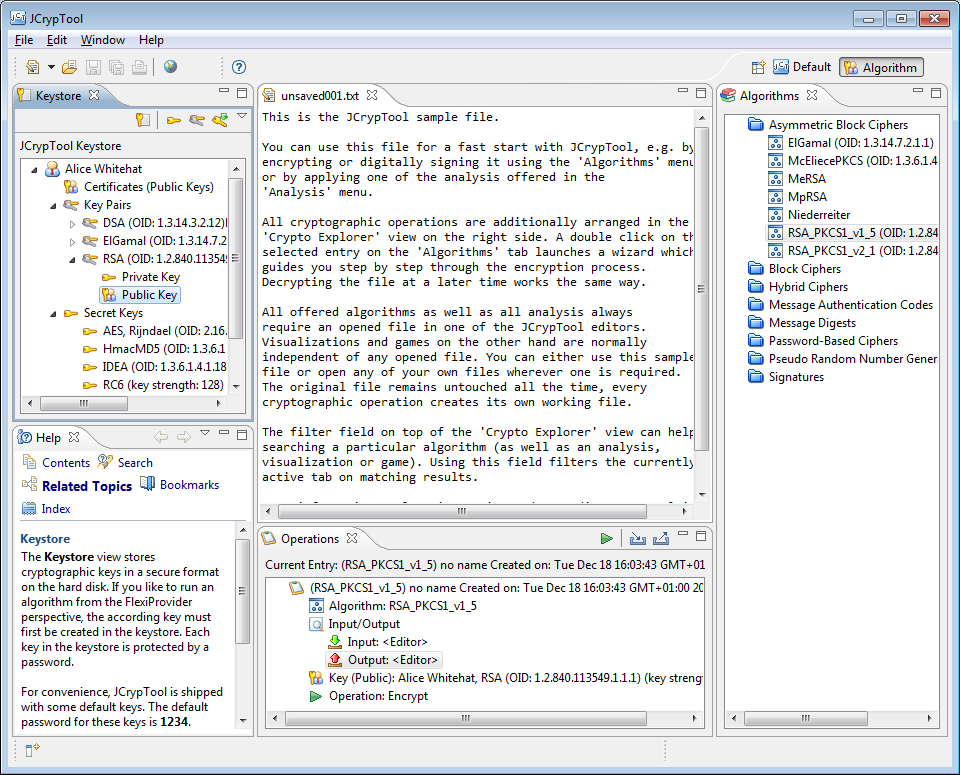

The Algorithm Perspective enables a function based access on the FlexiProvider crypto library included in JCrypTool. The algorithms shown in this perspective update themselves automatically when updating to a new FlexiProvider version. So a new FlexiProvider version may automatically lead to new and extended wizards.

All wizards offer a simple mode with default values and an advanced mode where you have to define all parameters yourself. The complete JCrypTool menu bar from the Default Perspective is not available in this perspective. All crypto menus are hidden to make focusing on the FlexiProvider easier.